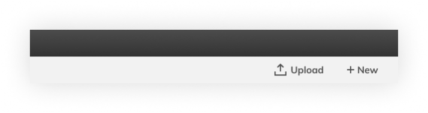
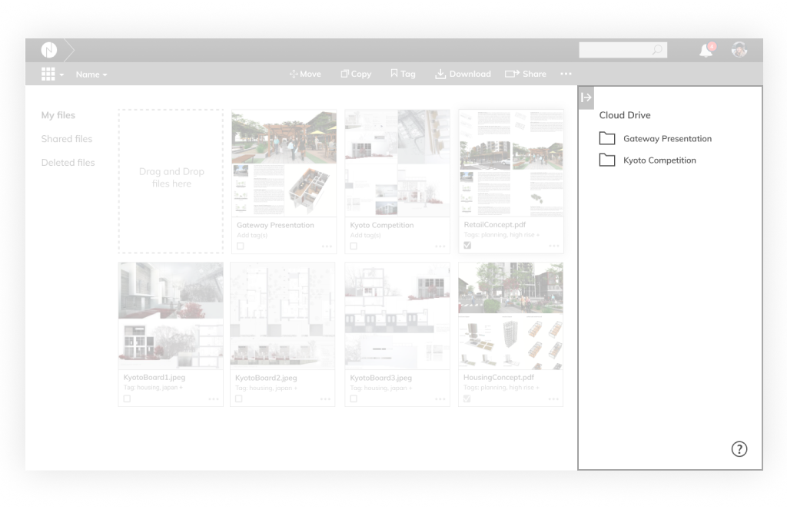
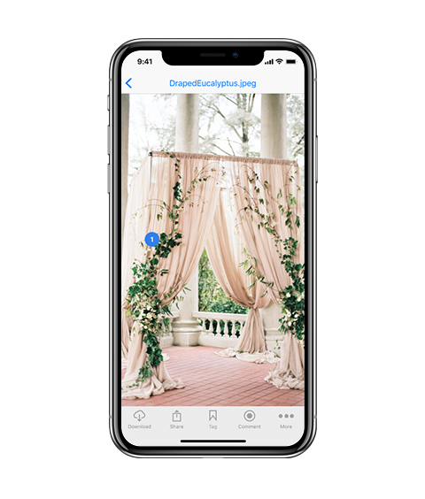
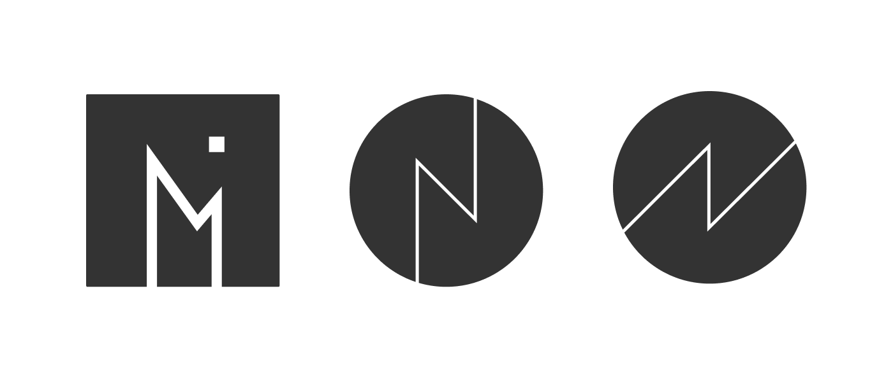
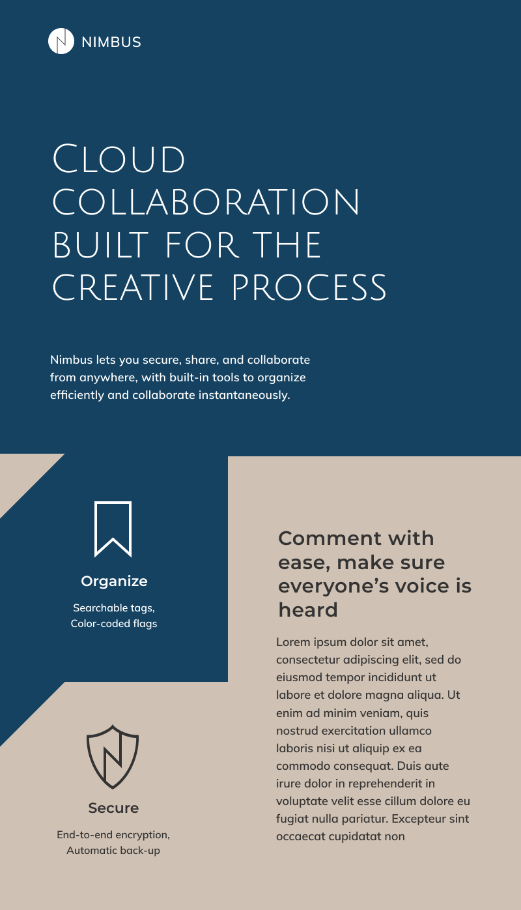
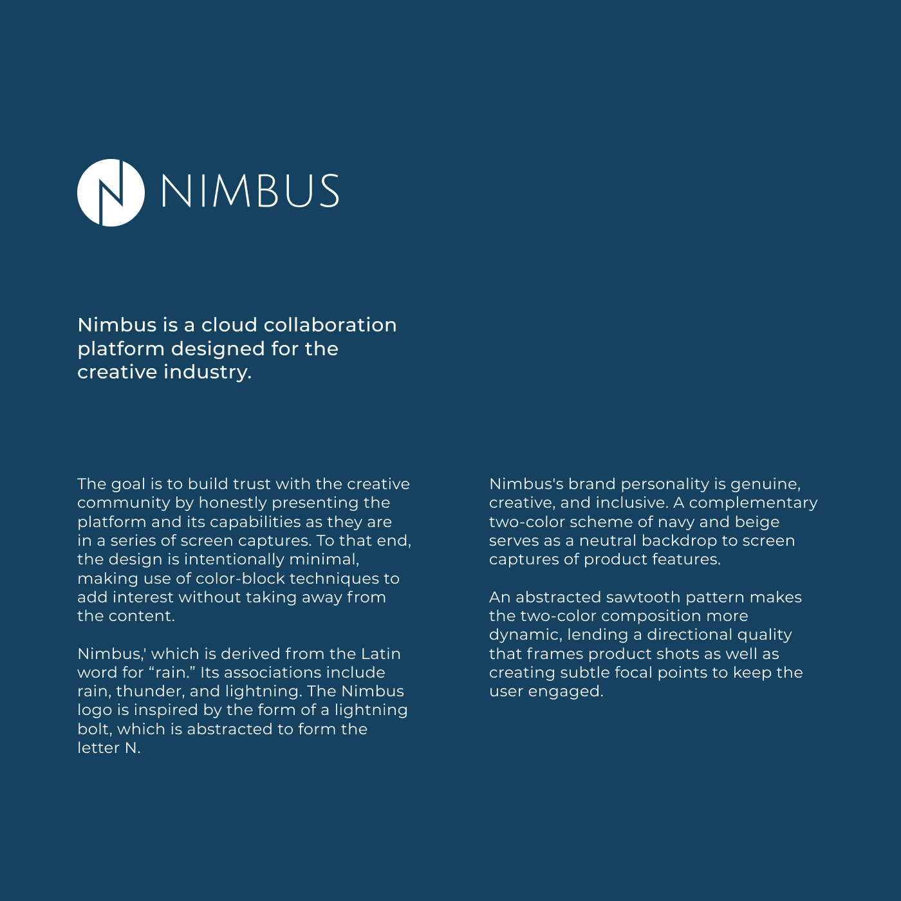
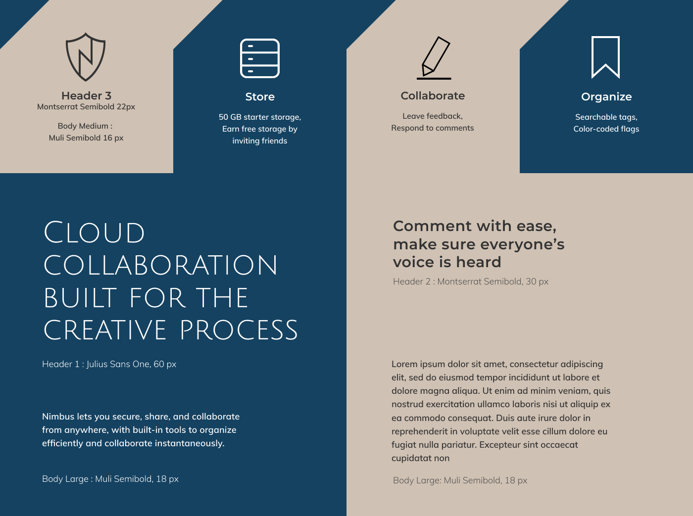
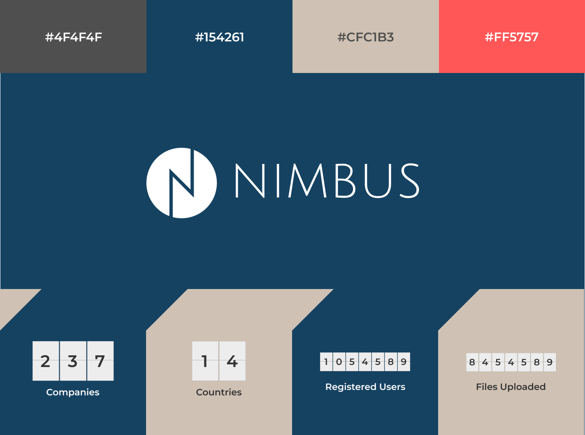

ROLES
- UX Designer
- User Interface Designer
- Visual Designer
DELIVERABLES
- High-fi dashboard mockup
- High-fi product page
- Wireframes
- User flows
- User stories and personas
- Competitive Analysis
- Product Page
SPECIFICATIONS
- Duration:
- 5 Weeks
- Tools:
- Figma
- InVision
- UsabilityHub
- Draw.io
- Adobe Photoshop
Overview
Nimbus is a cloud collaboration platform designed with the creative process in mind. The goal is to combine the best features of a cloud-based document viewer and enhance it with a robust commenting feature that allows for conversation threads, so as to create a more efficient feedback loop for remote teams.
VIEW THE INVISION PROTOTYPEResearch
The competitive landscape
The creative process is iterative in nature, it thrives on an efficient feedback system as well as an effective organization method that enhance rather than hinder the creative workflow. Currently, the creative community is hard-pressed to find a cloud collaboration platform that combines robust commenting features with advanced file organization capabilities.
Most market offerings fall into these two ends of the spectrum:
Platforms such as Evernote may have great organization capabilities (i.e. searchable tags), but they are lacking in commenting features that facilitate efficient feedback. Platforms such as Dropbox, InVision, and RedPen have powerful commenting features, but their file organization capabilities lack flexibility, restricting users to organize by nested folders.
User Research
A survey was deployed to quantify user's preferences of features for a cloud collaboration platform. Here are several key findings by the numbers:
83% are interested in more collaboration features
86% say that better organizational tools will improve their workflow
90% want more robust commenting features seen in platforms like slack
Survey analysis indicate that users are looking for more ways to organize their files to enhance their workflow. They also appear to already collaborate on the cloud and are wanting more advanced collaborative tools. Here are several significant results:
Competitive Analysis
I conducted a competitive analysis between four leading platforms such as Dropbox, Mega.nz, MediaFire, and pCloud. I identified a growing trend towards more advanced commenting features that allow users to track conversation histories in their shared documents.
Here is a snapshot of the four competitors I studied:
As I studied the competition, I was fascinated by the use of vertical versus horizontal toolbars. I also identified similarities, such as the tendency to put location-based links along the left-aligned toolbar pane.
Iterate
Synthesizing User Flows
After scrutinizing the layout and navigation structure of several cloud platforms, I synthesized my research into a series of user flows and wireframes that begin to inform the layout of key elements of the user interface.
Early Wireframes
I constructed a series early wireframes that were inpired by cloud storage platforms I analyzed during the competitive analysis phase of the project.
Usability Testing
Round 1 of user testing
This initial round revealed that users do not look for high-use functions like ‘upload’ along the bottom navigation bar. They expect it at the top bar or somewhere along the top half of the screen.
I learned that icons mean different things to different people, and that labeling a button by text is necessary for user comprehension. I also learned the importance of locating file paths ("breadcrumbing") on the top portion of the screen.

Second Round of User Testing
On this round, I learned that most users do not connect clicking a button in one location that affects the changes in another area of the screen. To them, it is as if their action does not generate a response and it becomes a frustrating experience to use the dashboard.
Consistent with the gestalt principle of proximity, it is best to put icons and functions on the same location as the pane or section of the dashboard that it affects.
Dashboard design
Dashboard Components
After scrutinizing the layout and navigation structure of several cloud platforms and validating design decisions through several rounds of user-testing, a clean dashboard design with a top horizontal toolbar and a right-aligned support pane prove to be the most effective.
Here is a map diagram that documents the key components of the dashboard:
Primary Controls
Breadcrumbing as a primary navigation tool is essential in a file organization software whose files can be buried several levels deep within folders. User tests reveal that the optimal location for file paths is at the top left portion of the screen.
Anticipating the user’s next actions allow for a responsive rather than a static set of toolbars. If the user has not made any file selections, then they are likely to upload or create a new folder.
Once file selections have been made, the tab bar switches to a series of functions that the user is likely to want to do next.

Location Pane and Primary Pane
Frequently-visited locations are located along the left edge of the dashboard. Rather than placing a list of file locations on an adjacent sidebar and creating a visual separation (Dropbox and Google Drive took this approach), I opted to remove any visual separation from the screen section that will be affected once a user makes a location selection.

Support Pane
This collapsible pane houses secondary functions that enhances but are not essential to the majority of user tasks. For instance, it displays the cloud file organization tree in ‘location mode’, and the comment summary in ‘comment mode.’
Document Commenting Feature
I conducted a competitive analysis between four leading platforms and identified a growing trend towards more advanced commenting features that allow users to track conversation histories in their shared documents. Users can choose between commenting on specific document locations, or starting general conversations that apply to the entire document.

User Interface Preference Test
I came up with dark and light UI versions of the dashboard. Both were equally interesting, so I conducted a preference test to select a UI theme direction.
Dashboard Design
“The following are 2 user interface color schemes for a cloud platform's commenting feature. The goal is to make sure that comments on the document as well as the comment thread on the right side is very legible to users. Which design do you prefer?”
60%
40%
Mobile App Components
As an extension of the desktop counterpart, the Nimbus mobile app is designed to give users the same powerful organization and collaboration features that the Nimbus desktop counterpart offers.
The concept of the responsive toolbar translates into a responsive set of tab bars. When loading the app, the tab bars display frequently-accessed locations—thereby flattening the app structure.
Anticipating the user’s next actions allow for a responsive rather than a static tab bar. Once file selections have been made, the tab bar switches from location-based functions to action-based functions.

In comment-mode, the tab bar adapts to anticipate the user’s next actions after opening a file.
Key takeaways
I learned the hard way that icons mean different things to different people, that labeling a button by text clarifies it that much more for the user.
As I watched people struggle with knowing where to click next when leaving a comment, I learned the importance of visual responsiveness to a user’s action.
Web Design
Branding
Logo Design
The cloud platform is named after the cloud formation Nimbus, which derives its name from the Latin word for rain. Its associations include rain, thunder, and lightning. The Nimbus logo is inspired by the form of a lightning bolt, which is abstracted to form the letter N.
Here are a few versions of the logo iterations, ultimately I chose the center one.
Typography
The brand typeface is Julius Sans One, chosen for the the thin font geometry that echoes the weight of the ‘N’ of the Nimbus logo. The secondary heading font is Montserrat, and the body font is Muli.
Style Tiles
Nimbus's brand personality is genuine, creative, and inclusive. A complementary two-color scheme of navy and beige serves as a neutral backdrop to screen captures of product features. An abstracted sawtooth pattern makes the two-color composition more dynamic, lending a directional quality that frames product shots as well as creating subtle focal points to keep the user engaged.
  Product Page Preference Test
Designing effective landing pages is about creating a clear content hierarchy. I had initially implemented a color-blocked background scheme to add more visual interest to the composition. I then conducted some preference tests to validate the design direction.
Product Feature Section
“The following are two options for showing screen captures of a cloud storage platform. The goal is to highlight the key features of the platform to give users a preview of its organizing and commenting features. Which design do you prefer?”
5%
95%
Putting the product page together
The final design is informed by people's overwhelming preference for clean and simple designs featuring neutral backgrounds that highlight product screen captures.
VIEW THE INVISION PROTOTYPE